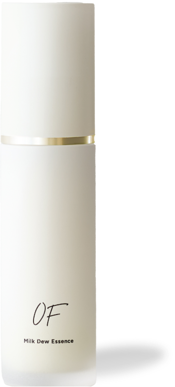
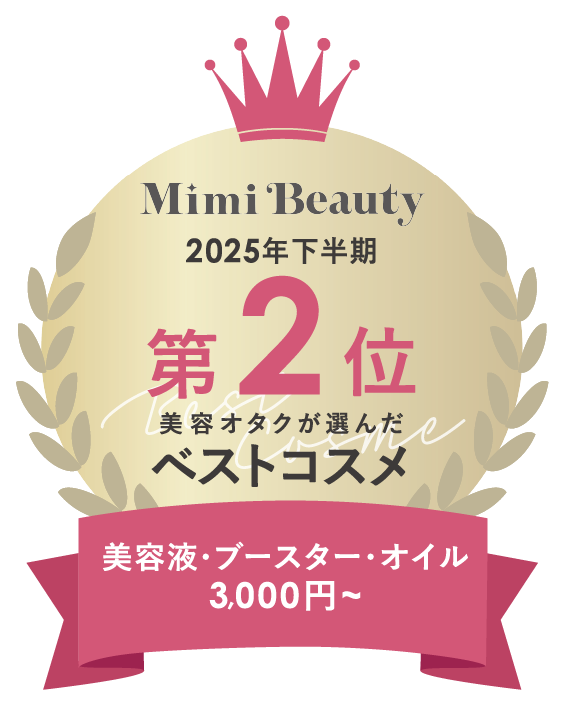
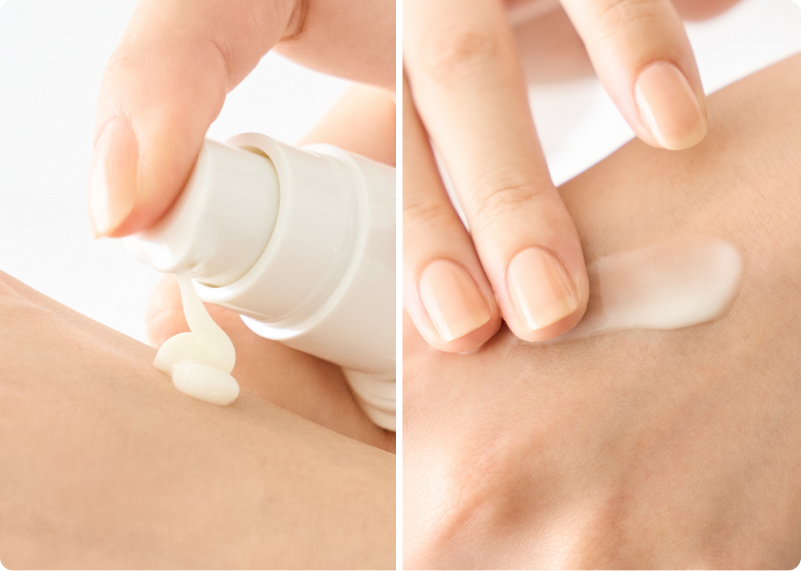
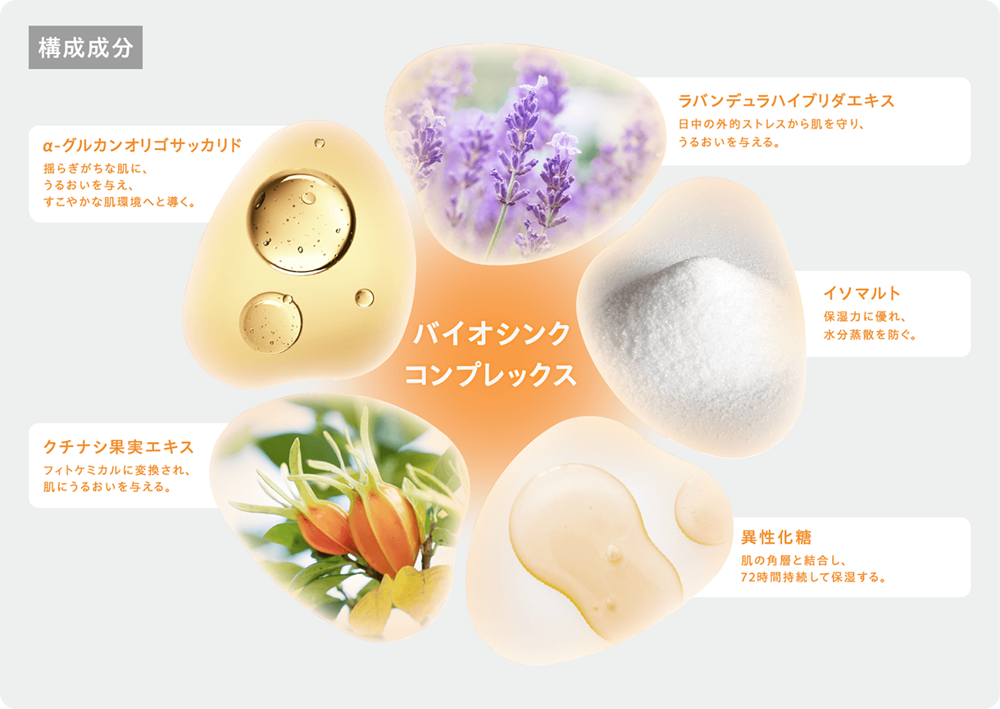

Concept
肌の常在菌“マイクロバイオーム”に着目したオールインワンとしても使用できるミルク美容液。
様々な外的刺激から肌を守りながら肌本来のバリア機能をサポートし、すこやかな肌を育んでくれる。
のびやかなテクスチャーとみずみずしい香りが、ソーシャルジェットラグと隣り合わせにある現代人の肌と心を優しく抱きしめ
てくれる使用感も魅力。
わずか１ステップで肌と心をフラットなコンディションに。
重ねるごとに密着力がアップする“バイオシンクラメラ構造”も魅力。
朝晩の１ステップで自分らしいハリツヤ肌に
近づける“美肌菌”オールインワンミルク美容液
「ストレス社会に生きる肌 」に向き合い、“ 菌 ”の力でフラットな美しさを引き出す高機能美容液 。
肌の常在菌“マイクロバイオーム”に着目し、それらをすこやかに育てるための独自の“美肌菌ケア”「バイオシンクコンプレックス」と「バイオシンクラメラ構造」を採用。
朝晩の1ステップでゆらぎ·乾燥·くすみに立ち向かい、自分らしい光を放つ肌へと導きます。
肌の常在菌“マイクロバイオーム”に着目したオールインワンとしても使用できるミルク美容液。
様々な外的刺激から肌を守りながら肌本来のバリア機能をサポートし、すこやかな肌を育んでくれる。
のびやかなテクスチャーとみずみずしい香りが、ソーシャルジェットラグと隣り合わせにある現代人の肌と心を優しく抱きしめ
てくれる使用感も魅力。
わずか１ステップで肌と心をフラットなコンディションに。
重ねるごとに密着力がアップする“バイオシンクラメラ構造”も魅力。


¥6,600（税込） / 50mL

洗顔後の肌に使用。2～3プッシュ手のひらにとり、顔全体にハンドプレスで優しくなじませます。
乾燥が気になるときは、2～3回重ね塗りするのがおすすめです。


バイオシンコンプレックスを構成する5つの成分は、その働きに応じて適材適所な箇所にアプローチをかけます。

バイオシンコンプレックスを角層すみずみまでスッと浸透させ、肌にピタッと密着。

美容液のラメラ状のゲルネットワーク構造が、肌の上でラメラ構造を形成。塗り重ねるほどに、皮膚と同様のラメラ構造を形成し、ラメラ構造が強固になっていきます。
”本当に必要なものだけ” にこだわった7つのフリー処方
「OF」のアイテムは肌が喜ぶ成分を必要なだけ配合。鉱物油*2・動物由来成分・合成着色料・アルコール・パラベン・マイクロビーズ・サルフェートを含まない設計。自然由来指数99%*3。即本来のリズムに、優しく、そっと寄り添います。さらに「Milk Dew Essence（ミルクデューエッセンス）」は、石油系界面活性剤もフリー。
*2 ワセリン、ミネラルオイル、パラフィン *3 水を含む（ISO16128準拠）

1日の始まりと終わりに寄り添う香り
香調：Oriental Fruity Green
柔らかなグリーンティーに、ジューシーで瑞々しいレモンとオレンジが爽やかに広がり、ジャスミンの華やかさとナツメグのスパイシーなアクセントが香りを引き立ててくれるオリエンタルフルーティグリーンの香り。焼したウッドとムスクの余韻が、香りに穏やかで芯のある深みと高級感をもたらしてくれます。